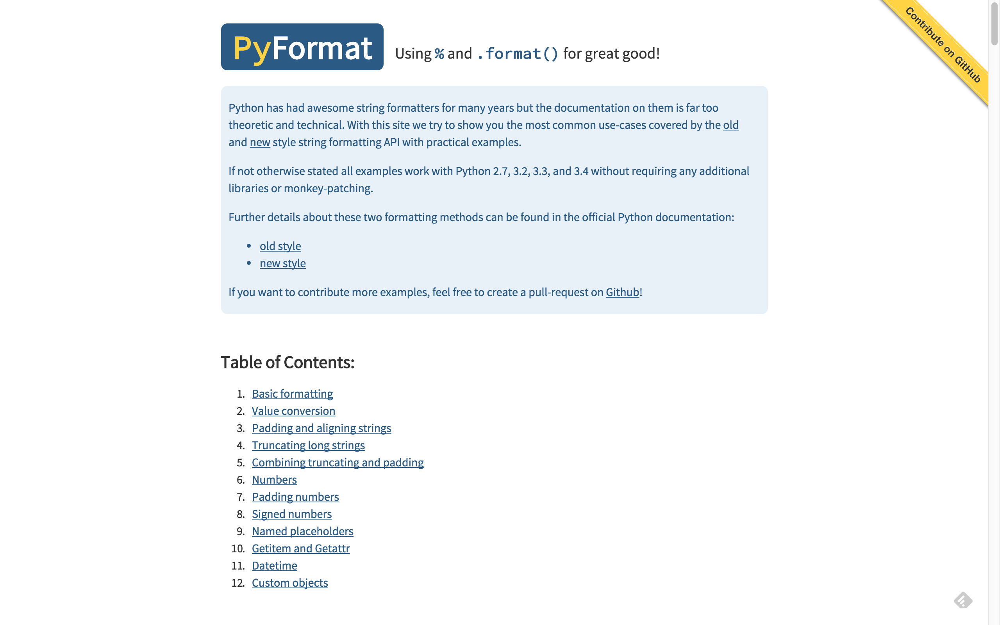
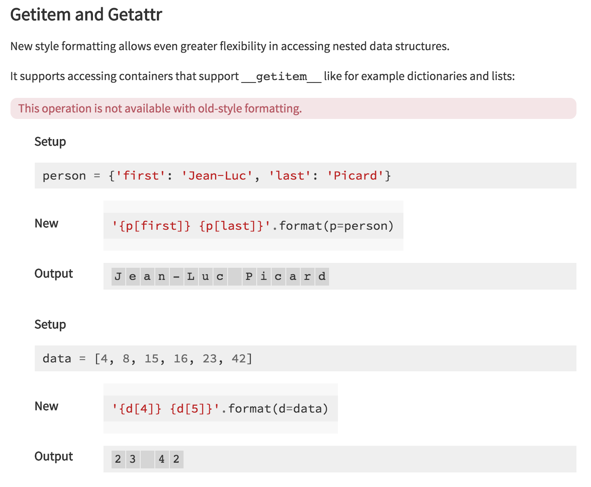
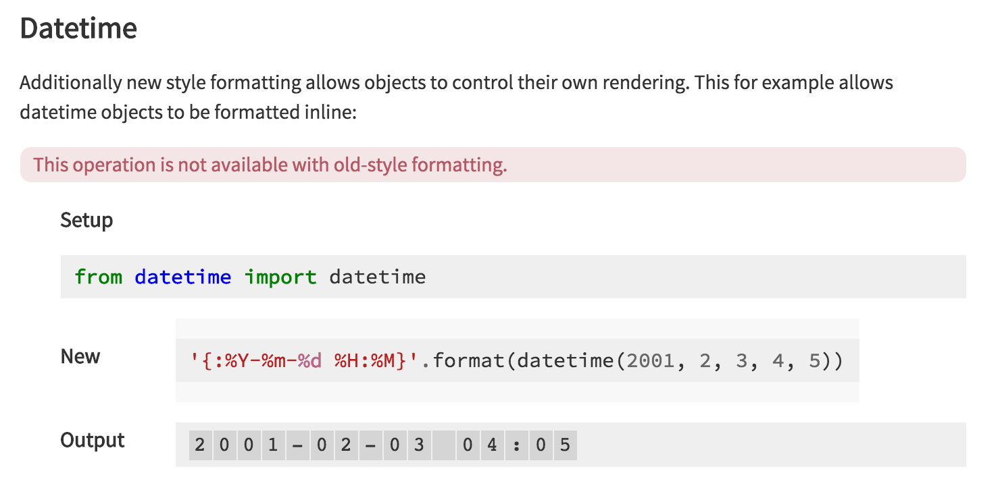

파이썬에서 문자열을 포매팅하는 방법은 크게 두 가지로 나뉩니다. %를 붙이는 구식(old style) 방법과 .format()을 사용하는 신식(new style) 방법인데요. 이 둘의 차이를 잘 비교해 둔 사이트가 있어 소개합니다.

개인적으로도 .format() 방식을 사용하고는 있지만, 이 문서를 읽으면서 .format() 방식의 유연함과 다양한 활용성을 잘 모르고 있었다는 생각이 들었습니다. 특히 다음과 같은 것들이 인상적이었는데요.
dict 객체를 넘겨 받으면서 변수에 저장하여 사용하기

Datetime 객체를 특정한 형태로 출력하기

이런 기능들은 % 방식으로는 구현할 수 없다고도 하네요.
글이 아주 길지는 않으니, 문자열 포매팅을 자주 사용하지만 깊이 알지는 못한다고 생각하신다면 한 번 쯤 방문해보시면 어떨까요?